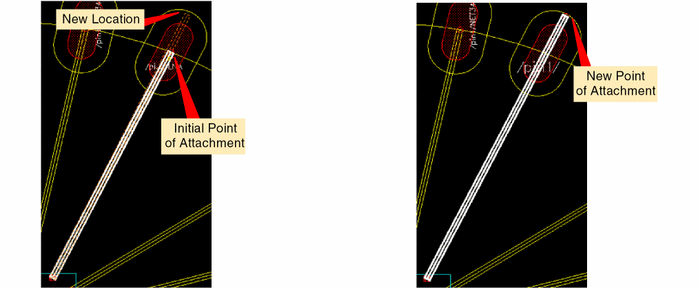

Updating the Finger Attach Point
The Update finger attach point command lets you alter the point where a bond wire is attached to its bond finger.
- Choose Module – Bond Wire – Update finger attach point.
- Click the bond finger for which the point of attachment is to be changed.
- Move the pointer to the required location.
-
Click to indicate the new attachment point.
The bond finger attachment point is updated as shown in the following images.

Related Topic
Moving Bond Wires and Bond Fingers
Return to top